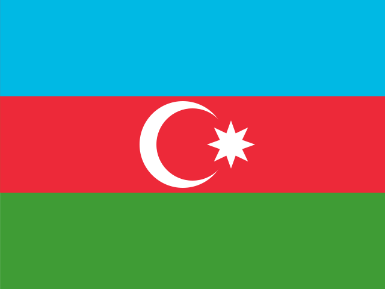

유도 (Judo)
2028 LA 올림픽 유도에는 15개 세부종목이 있다.
![유도 한눈에 보기. LA28 출전 규모 372명. 경기 방식: 체급별 토너먼트 → 8강 → 패자부활전 → 결승·동메달 2명. 핵심 규칙: 정규 4분, 한판이면 바로 이긴다(절반 2개도 한판). 4분 뒤 동점이면 먼저 점수를 내는 골든스코어로 간다. 지도(벌칙) 3개를 받으면 반칙패다. 출전권 배정 (전체 372명): 랭킹 직행 238, 대륙 쿼터 104, 혼성 단체 초청 6, 개최국 14, 보편성 10. 체급별 쿼터 (성별 7체급 공통): 남자 -60kg 18명 + 대륙 (랭킹 직행 17, 개최국 1, 대륙 쿼터 가변); 남자 -66kg 18명 + 대륙 (랭킹 직행 17, 개최국 1, 대륙 쿼터 가변); 남자 -73kg 18명 + 대륙 (랭킹 직행 17, 개최국 1, 대륙 쿼터 가변); 남자 -81kg 18명 + 대륙 (랭킹 직행 17, 개최국 1, 대륙 쿼터 가변); 남자 -90kg 18명 + 대륙 (랭킹 직행 17, 개최국 1, 대륙 쿼터 가변); 남자 -100kg 18명 + 대륙 (랭킹 직행 17, 개최국 1, 대륙 쿼터 가변); 남자 +100kg 18명 + 대륙 (랭킹 직행 17, 개최국 1, 대륙 쿼터 가변); 여자 -48kg 18명 + 대륙 (랭킹 직행 17, 개최국 1, 대륙 쿼터 가변); 여자 -52kg 18명 + 대륙 (랭킹 직행 17, 개최국 1, 대륙 쿼터 가변); 여자 -57kg 18명 + 대륙 (랭킹 직행 17, 개최국 1, 대륙 쿼터 가변); 여자 -63kg 18명 + 대륙 (랭킹 직행 17, 개최국 1, 대륙 쿼터 가변); 여자 -70kg 18명 + 대륙 (랭킹 직행 17, 개최국 1, 대륙 쿼터 가변); 여자 -78kg 18명 + 대륙 (랭킹 직행 17, 개최국 1, 대륙 쿼터 가변); 여자 +78kg 18명 + 대륙 (랭킹 직행 17, 개최국 1, 대륙 쿼터 가변). 예선 구조 (차례대로): IJF 올림픽 랭킹 체급당 17명 (~2028.06, 국가당 체급 1명); 대륙 쿼터 104명 (같은 랭킹, 대륙 통합 랭킹 순); 혼성 단체 초청 6명 (단체 출전 보완); 개최국·보편성 24명 (미국 14 · 보편성 10).](assets/summary/oljudo.svg)
LA28 예선 대회 결과 2026-11-08 02:31 KST
LA28 예선 대회만 싣는다. 위키백과 대회 문서에서 자동으로 모은다. 대회 중에는 한 시간마다 새로 읽는다. 한국 선수가 있는 줄은 붉게 칠했다. 하계 실시간 전체 →
세계유도선수권 바쿠 · 10.04~10.11 종료 예선: IJF 올림픽 랭킹 기간(2026.06.15~) 안 · 결과 15/15종목 · 한국 금1 은0 동0
| 종목 | 금 | 은 | 동 |
|---|---|---|---|
| 남자 events | |||
| Extra-lightweight (−60 kg) |  Ahmad Yusifov 아제르바이잔 | ||
| Half-lightweight (−66 kg) | |||
| Lightweight (−73 kg) | Rashid Mammadaliyev 아제르바이잔 | ||
| Half-middleweight (−81 kg) | Zelim Tckaev 아제르바이잔 | Omar Rajabli 아제르바이잔 | |
| Middleweight (−90 kg) | Murad Fatiyev 아제르바이잔 | ||
| Half-heavyweight (−100 kg) | |||
| Heavyweight (+100 kg) | Ushangi Kokauri 아제르바이잔 | Kanan Nasibov 아제르바이잔 | |
| 여자 events | |||
| Extra-lightweight (−48 kg) | |||
| Half-lightweight (−52 kg) | |||
| Lightweight (−57 kg) | |||
| Half-middleweight (−63 kg) | |||
| Middleweight (−70 kg) | |||
| Half-heavyweight (−78 kg) | |||
| Heavyweight (+78 kg) | |||
| 혼성 events | |||
| 혼성 단체 | |||
메달 순위:  일본 8-2-3 ·
일본 8-2-3 ·  조지아 2-1-2 · 아제르바이잔 1-2-4 ·
조지아 2-1-2 · 아제르바이잔 1-2-4 ·  스페인 1-2-1 ·
스페인 1-2-1 ·  러시아 1-1-4 ·
러시아 1-1-4 ·  아랍에미리트 1-1-0 ·
아랍에미리트 1-1-0 ·  대한민국 1-0-0 ·
대한민국 1-0-0 ·  프랑스 0-2-2
프랑스 0-2-2
출처: 위키백과 2026 World Judo Championships · 2026-11-06 22:36 읽음
예선 규정
이벤트 및 출전 쿼터
남녀 각 7체급과 혼성 단체에 372명이 출전한다. 쿼터는 선수 이름으로 배정되며 국가는 체급당 1명이다. 혼성 단체는 개인전 출전 선수로 구성한다.
| 구분 | 일반쿼터 | 개최국쿼터 | 보편성쿼터 | 합계 |
|---|---|---|---|---|
| 남자 | 171 | 7 | — | 178 |
| 여자 | 171 | 7 | — | 178 |
| 혼성 단체 초청 | 6 | 0 | 0 | 6 |
| 보편성 | — | — | 10 | 10 |
| 합계 | 348 | 14 | 10 | 372 |
원문 B.1은 성별 합계를 186명으로 적는다. 혼성 단체 초청 6명과 보편성 10명은 성별을 정하지 않는다.
예선 경로
모든 경로가 IJF 올림픽 랭킹을 기준으로 한다.
남자 · 7체급
남자 선발 경로
체급별 국가 1명 · 규정 ↗
| 경로 | 쿼터 | 선발 방식 |
|---|---|---|
| (규정 D.1.1) 체급별 랭킹 직행 | 체급당 17명 (119명) | [1] |
| (규정 D.1.2) 대륙 쿼터 | 52명 | [2] |
| (규정 D.1.3) 혼성 단체 초청 | 6명 (성별 무관) | [3] |
| (규정 D.2) 개최국쿼터 | 7명 | [4] |
| (규정 D.3) 보편성쿼터 | 10명 (성별 무관) | [5] |
- [1]IJF 올림픽 랭킹 체급별 상위 17명(국가당 체급 1명). 같은 국가 선수가 여럿이면 국가 올림픽위원회(NOC)가 고른다.
- [2]대륙별로 전 체급·성별 통합 랭킹을 만들어 점수 높은 순으로 배정: 아프리카 12 · 유럽 13 · 아시아 12 · 오세아니아 4 · 아메리카 11(성별). 대륙 쿼터는 국가당 전체 1명뿐이다.
- [3]혼성 단체 6개 체급 중 5개만 채운 국가에 1명을 줘 단체 출전을 가능하게 한다. 대륙별 1명 + 혼성 단체 세계랭킹 1명.
- [4]미국에 체급마다 1명(남녀 각 7명)과 혼성 단체 출전권.
- [5]삼자위원회가 배정한다. IOC 초청 2027.10.01, 신청 마감 2028.01.15.
여자 · 7체급
여자 선발 경로
체급별 국가 1명 · 규정 ↗
| 경로 | 쿼터 | 선발 방식 |
|---|---|---|
| (규정 D.1.1) 체급별 랭킹 직행 | 체급당 17명 (119명) | [1] |
| (규정 D.1.2) 대륙 쿼터 | 52명 | [2] |
| (규정 D.1.3) 혼성 단체 초청 | 6명 (성별 무관) | [3] |
| (규정 D.2) 개최국쿼터 | 7명 | [4] |
| (규정 D.3) 보편성쿼터 | 10명 (성별 무관) | [5] |
- [1]IJF 올림픽 랭킹 체급별 상위 17명(국가당 체급 1명). 같은 국가 선수가 여럿이면 국가 올림픽위원회(NOC)가 고른다.
- [2]대륙별로 전 체급·성별 통합 랭킹을 만들어 점수 높은 순으로 배정: 아프리카 12 · 유럽 13 · 아시아 12 · 오세아니아 4 · 아메리카 11(성별). 대륙 쿼터는 국가당 전체 1명뿐이다.
- [3]혼성 단체 6개 체급 중 5개만 채운 국가에 1명을 줘 단체 출전을 가능하게 한다. 대륙별 1명 + 혼성 단체 세계랭킹 1명.
- [4]미국에 체급마다 1명(남녀 각 7명)과 혼성 단체 출전권.
- [5]삼자위원회가 배정한다. IOC 초청 2027.10.01, 신청 마감 2028.01.15.
체급별 예선 규정
체급마다 IJF 랭킹 직행 17명 + 개최국 1명이 고정이고, 대륙 쿼터(성별 52명)·혼성 단체 초청(6명)·보편성(10명)은 체급과 무관한 공용 풀이라 체급별 최종 인원은 예선이 끝나야 정해집니다. 체급을 누르면 그 체급의 좌석 그림·규정 표와 한국 주요 선수 문서로 이동합니다.
| 체급 | 배정 | 한국 주요 선수 |
|---|---|---|
| 남자 -60kg | IJF 랭킹 직행 17 + 개최국 1 + 공용 풀 | 이하림 |
| 남자 -66kg | IJF 랭킹 직행 17 + 개최국 1 + 공용 풀 | 김찬녕 |
| 남자 -73kg | IJF 랭킹 직행 17 + 개최국 1 + 공용 풀 | 이은결, 안재홍 |
| 남자 -81kg | IJF 랭킹 직행 17 + 개최국 1 + 공용 풀 | 이준환 |
| 남자 -90kg | IJF 랭킹 직행 17 + 개최국 1 + 공용 풀 | 김종훈 |
| 남자 -100kg | IJF 랭킹 직행 17 + 개최국 1 + 공용 풀 | 한주엽, 이승엽 |
| 남자 +100kg | IJF 랭킹 직행 17 + 개최국 1 + 공용 풀 | 김민종 |
| 여자 -48kg | IJF 랭킹 직행 17 + 개최국 1 + 공용 풀 | — |
| 여자 -52kg | IJF 랭킹 직행 17 + 개최국 1 + 공용 풀 | 장세윤 |
| 여자 -57kg | IJF 랭킹 직행 17 + 개최국 1 + 공용 풀 | 허미미, 김현아 |
| 여자 -63kg | IJF 랭킹 직행 17 + 개최국 1 + 공용 풀 | 김지수 |
| 여자 -70kg | IJF 랭킹 직행 17 + 개최국 1 + 공용 풀 | 김혜미 |
| 여자 -78kg | IJF 랭킹 직행 17 + 개최국 1 + 공용 풀 | 김민주 |
| 여자 +78kg | IJF 랭킹 직행 17 + 개최국 1 + 공용 풀 | 김하윤, 이현지 |
| 혼성 단체 | 개인전 출전 선수로 구성 · 초청 6명 | — |
개최국·보편성 쿼터
개최국 미국은 14개 체급에 1명씩과 혼성 단체 출전권을 받는다.
보편성 쿼터는 10명이다. IOC 초청 2027.10.01, 신청 마감 2028.01.15.
참가 자격
올림픽 헌장(제41조 국적, 제43조 세계반도핑규약 및 경기 조작 방지 규정), 여성 카테고리 보호에 관한 IOC 정책, IOC 참가 조건 및 IJF 규정을 충족해야 한다. 2013.12.31 이전 출생이어야 한다. 쿼터는 선수 이름으로 배정된다.
예선 일정
예선 및 대회 일정
2026.06.15부터 IJF 올림픽 랭킹 기간이 진행 중이다.
| 날짜 | 일정 |
|---|---|
| 2026.06.15 | IJF 올림픽 랭킹 기간 시작 |
| 2027.10.01 | IOC 보편성쿼터 신청 안내 |
| 2028.01.15 | 보편성쿼터 신청 마감 |
| 2028.06.12 | 랭킹 기간 종료 |
| 2028.06.15 | IJF 쿼터 통보 (혼성 단체 초청 포함) |
| 2028.06.22 | 국가 올림픽위원회(NOC) 확정 |
| 2028.06.23 | 미사용 쿼터 재배정 |
| 2028.06.26 | LA28 스포츠 엔트리 마감 |
직전 올림픽 메달리스트
2024 파리 올림픽
| 세부종목 | 금 | 은 | 동 |
|---|---|---|---|
| 남자 -60kg | Yeldos Smetov (KAZ) | Luka Mkheidze (FRA) | Ryuju Nagayama (JPN) / Francisco Garrigós (ESP) |
| 남자 -66kg | Hifumi Abe (JPN) | Willian Lima (BRA) | Gusman Kyrgyzbayev (KAZ) / Denis Vieru (MDA) |
| 남자 -73kg | Hidayat Heydarov (AZE) | Joan-Benjamin Gaba (FRA) | Adil Osmanov (MDA) / Soichi Hashimoto (JPN) |
| 남자 -81kg | Takanori Nagase (JPN) | Tato Grigalashvili (GEO) | 이준환 (KOR) / Somon Makhmadbekov (TJK) |
| 남자 -90kg | Lasha Bekauri (GEO) | Sanshiro Murao (JPN) | Maxime-Gaël Ngayap Hambou (FRA) / Theodoros Tselidis (GRE) |
| 남자 -100kg | Zelym Kotsoiev (AZE) | Ilia Sulamanidze (GEO) | Peter Paltchik (ISR) / Muzaffarbek Turoboyev (UZB) |
| 남자 +100kg | Teddy Riner (FRA) | 김민종 (KOR) | Temur Rakhimov (TJK) / Alisher Yusupov (UZB) |
| 여자 -48kg | Natsumi Tsunoda (JPN) | Bavuudorjiin Baasankhüü (MGL) | Shirine Boukli (FRA) / Tara Babulfath (SWE) |
| 여자 -52kg | Diyora Keldiyorova (UZB) | Distria Krasniqi (KOS) | Larissa Pimenta (BRA) / Amandine Buchard (FRA) |
| 여자 -57kg | Christa Deguchi (CAN) | 허미미 (KOR) | Haruka Funakubo (JPN) / Sarah-Léonie Cysique (FRA) |
| 여자 -63kg | Andreja Leški (SLO) | Prisca Awiti Alcaraz (MEX) | Clarisse Agbegnenou (FRA) / Laura Fazliu (KOS) |
| 여자 -70kg | Barbara Matić (CRO) | Miriam Butkereit (GER) | Michaela Polleres (AUT) / Gabriella Willems (BEL) |
| 여자 -78kg | Alice Bellandi (ITA) | Inbar Lanir (ISR) | Ma Zhenzhao (CHN) / Patrícia Sampaio (POR) |
| 여자 +78kg | Beatriz Souza (BRA) | Raz Hershko (ISR) | 김하윤 (KOR) / Romane Dicko (FRA) |
| 혼성 단체 | FRA | JPN | BRA / KOR |
대한민국
한국 출전 전망
2026-10-04 기준 참고현재 성적을 LA28 규정에 단순 적용한 참고치이며 2028 확정 전망이 아님.
인원 범위 미산정 · IJF 랭킹 기간 진행 중
모든 쿼터가 2028.06.12 IJF 올림픽 랭킹으로 정해진다. 랭킹 기간이 시작된 지 넉 달이라 순위를 단순 적용하지 않았다. 아시안게임은 랭킹 포인트 대회로 반영될 뿐 직접 예선이 아니다.
| 선수·팀 | 공개 성적 | 근거 |
|---|---|---|
| 허미미 | 2026 아시안게임 개인전 금 | 파이낸셜뉴스 · 2026.10.03 |
| 혼성 단체 | 아시안게임 준결승 카자흐스탄에 3–4 패 (동메달 결정전 진출) | 파이낸셜뉴스 · 2026.10.03 |
직행: 체급별 17위 안에 들면 직행한다. 같은 체급 한국 선수가 여럿이면 대한체육회가 고른다.
대륙 쿼터: 아시아는 성별 12명이지만 국가당 1명뿐이라, 직행 선수가 적을 때 보완 경로가 된다.
혼성 단체: 6개 혼성 체급 중 5개를 채운 국가는 대륙 초청 1명을 받을 수 있다.
자료 기준: 2026 아시안게임 유도 결과. 랭킹 수치는 이번 조사에서 확인하지 않았다.
유도 · 올림픽예선 | 규정 확인 2026.10.04 · 한국 전망 기준 2026.10.04
각주
외부 링크
공식 근거
규정 확인일: 2026.10.04. IOC가 게시한 IJF 원문 PDF(7쪽, Version as of 12 May 2026)를 기준으로 정리했다. 본 문서는 비공식 한국어 요약이며 최종 적용은 IJF 공지를 따른다.